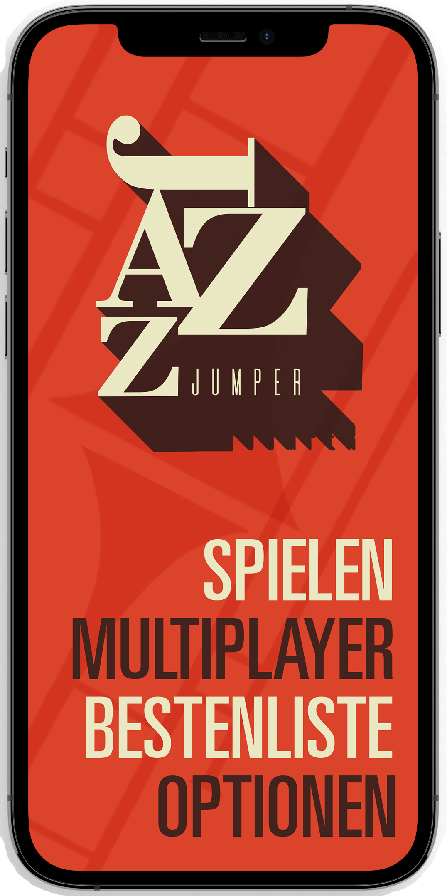

Bei „Jazz Jumper“ erlebst du ein einzigartiges Spielerlebnis.
Ob Solo, Kooperativ oder
Kompetetiv. Hüpfe deinen Weg an die Spitze der Bestenliste und lasse dich berieseln von feinster
Jazz Musik.
Im Koop-Modus geht es darum gemeinsam mit deinem Partner die Spitze zu erklimmen, doch Vorsicht!
Entfernt ihr euch zu sehr von einander hört die Band auf zu spielen und das wars.
Im Competition Mode ist es genau anders rum, ziehe deinen Gegenspieler ab und sei schneller als
jeder andere.